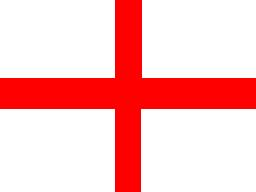
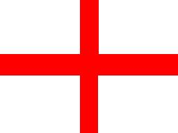

BARD PAPER: DANI5003
BARD PAPER: DANI5003 | Home | Traveller | BARD | DANI |
Knights of St. George

BARD PAPER: DANI5003 | Home | Traveller | BARD | DANI |
Knights of St. George

When the Collapse hit and severed all interstellar links, the Knights were stranded on a strange planet far from home. Once they realized that there was no going home, they sought to make Luhtala their home. In 1139 they swore an oath to defend and protect the planet from all harm. They became the elite commando force of the small but growing Luhtala military.
In 1200 the Knights make up one battalion of the Luhtalian military. It is not organized along standard military lines, but in a pattern unique to the Knights. The Knights do not divide themselves into officers and enlisted. Instead they have 12 ranks. A unit will be made up of knights of different ranks, and the unit will be commanded by the highest ranking knight. In case that knight falls in combat, the next highest ranking knight will take over. All knights have been trained for leadership and to be able to succeed if command falls to them.
Not all the members of the order are knighted, the lowest rank is the squire. Recruits start off as squires and are only knighted once they have shown themselves to be worthy of the honor. The knighting ceremony has been the same since the earliest days of the order on ancient Terra. The night before the ceremony the candidate knight holds a vigil in the Order's chapel, purifying themselves. The next day the candidate is knighted by the Grand Knight of the Order before all available knights. The candidate swears to defend the Faith, protect the helpless and to uphold the principles of the Order. Then the candidate is knighted and given a set of golden spurs. For the most part the Knights do not ride horses or other beasts; the spurs are only worn in formal ceremonies.
The Knights are used as commandos and as the elite strike force of the Luhtalian military. They also are used as spies, saboteurs, infiltrators, assassins or for any other job that the normal military is not equipped for. For most of the collapse there was little call for any of these skills, but with the formation of the RC, the demand for these skills is on the rise. Lucifer has sent the Knights on several missions into the Wilds. Knights can not join RC forces as they are sworn to serve Lucifer, and they can not have two masters. When serving with RC forces, the Knights maintain a separate command structure, while liaising with RC officers. They are willing to accept orders from RC officers as long as those orders do not conflict with their oath.
Knight training consists of physical training to improve the body, religious training to improve the soul and martial training to enable the Knights to protect their charges. The Knights are trained with many different weapons, ranging from the archaic to the ultra modern. The training places emphasis on combat training, but also provides training in numerous other areas that will assist the Knights in their wide variety of missions. A Knight tends to be highly trained in combat with a wide variety of other skills.
Only believers in the Faith belong to the Order. While there are only 500 or so Knights, there are a few thousand believers in the Faith on Lucifer. The knights are a coed order and their members are encouraged to marry and have children which will hopefully follow in their parents footsteps. The Knights and other followers of the Faith preach and try to persuade other citizens to accept the Faith as the one true path towards salvation. This preaching blends in with that of the dozens of other religions that thrive on Lucifer. Since the Collapse the Knights have lost any ideas of Solomani Supremacy that they may have started with. The order accepts all members regardless of their ancestry. All that matters is their belief in the Faith. Though it has not come up yet, the Order would be willing to accept non-humans into the Order. Several members have tried to convert a few Schalli, but so far none have seen the light.
Membership in the order is for life, the only way to leave the order is to be thrown out or to quit. Either is thought to be a disgrace and a dishonor. Knights can be thrown out of the Order for committing a crime, such as murder, robbery etc. In these cases the former member is turned over to the local authorities for punishment. The only other way to be thrown out is to commit an act of blasphemy. A member can leave of their own free will if they choose so. They must give up their title and can no longer claim to be a Knight of St. George. Before being allowed to leave, the member will receive a great deal of counseling to make sure that they are doing the right thing. A member can choose to take a leave of absence for a short period for personal reasons. Since the Order came to Luhtala, no member has been thrown out, though a few have lost their faith and have chosen to leave. Thus PCs who are members of the Order will have to have a valid reason for leaving active duty to take up adventuring. Knights will not simply leave the order to find plunder in the Wilds. A member might have been sent into the Wilds on a mission or have a personal reason for going.
The Order of St. George is an ancient fighting order from Terra. They practice a form of Christianity. The exact dogma of the Order is not described here, as to avoid offending anyone's personal beliefs. The individual referee can portray the religion as best fits his beliefs and the beliefs of his players.
The Order does have a code of conduct
The Faith is the one true path towards salvation.
Followers of the Faith must lead a virtuous life. Money and physical possesions are of little use, and all Knights return to the Order any wealth that they find above a certain amount to keep themselves in a meager lifestyle. Knights receive room and board.
Once someone has truly accepted the Faith, they are assured a place in heaven. As such the Knights do not fear death, because a place in heaven has been set aside for them. They do not actively seek out death, as death would prevent them from fulfilling their mission of protecting and defending. Also if they have to make a choice between saving a nonbeliever and a believer they will save the non-believer. If the non-believer dies they will not have been saved, and will suffer for it in the afterlife.
The Order tries to convert non-believers by teaching the Faith and by living a virtuous life. The Order does not believe in forcing people to follow their religion. "Convert or Die" is not an effective means of conversion, as it only gets people to pretend to convert. What really matters is that they believe in the Faith in their heart.
Violence should only be used while protecting their charges from harm. It is a method of last resort and when used it should be accomplished with a minimum of pain and with regret.
Each term at least one skill level must be taken in Gun Combat, Melee or Archaic Weapons.
Ranks